ES 667 · Deep Learning · the maths before the VAE
KL divergence and variational inferenceA coin, two Gaussians and two mixtures, following the PML course
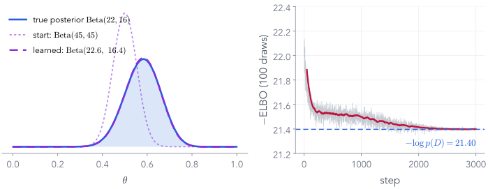
Left: a simple $\mathrm{Beta}$ guess (purple) is trained until it sits on the coin's posterior (blue). Right: the training loss settles at exactly $-\log p(D)$.
By the end of today, every part of that picture will mean something precise.
Nipun Batra · IIT Gandhinagar · companion notebook: vi-lab/vi_lecture.ipynb
Part 1 of 9
A reminder: Bayes' rule, and why its denominator is hard
Everything today is about one quantity we want, the posterior, and one we cannot compute, the evidence. Ten minutes on what they are, on examples you have seen, before we learn to get around the second.
- 1Recap: Bayes, and why the evidence is hard
- 2KL divergence: how far is q from p?
- 3Fitting q by gradient descent
- 4No formula for KL? Monte Carlo
- 5Gradients through samples
- 6The ELBO
- 7VI for the coin
- 8Linear regression: correlated weights
- 9Neural networks and the VAE
Bayes' rule, the way the PML course began
Steve is meek and orderly. Librarian or farmer?
| librarian | farmer | |
|---|---|---|
| prior: out of 210 people | 10 | 200 |
| likelihood: fits the description | 40% | 10% |
| people who fit | 4 | 20 |
| posterior: share of those who fit | 4/24 = 0.167 | 0.833 |
The description fits librarians four times better, yet Steve is five times likelier a farmer. The prior matters.
▶ Notebook N1 · from PML Lecture 2 (Bayes for ML)
Bayes' rule for machine learning
"Job" becomes the parameters $\theta$; "description" becomes the data $D$
For Steve the evidence was a sum over two jobs. Here it is an integral over every possible $\theta$.
PML Lecture 2, pp. 19–20 · PML Lecture 23, "Bayesian ML: Recap"
The example we will come back to all lecture ▶ N1
A coin: prior $\mathrm{Beta}(5, 3)$, then 17 heads in 30 tosses
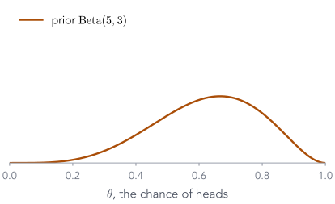
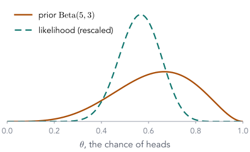
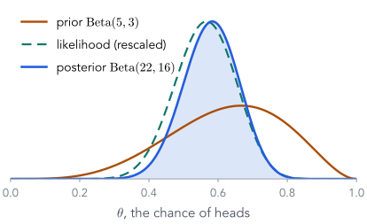
Prior $\mathrm{Beta}(5, 3)$: before any tosses we think heads is a bit likelier (mean 0.625).
Likelihood $\theta^{17}(1-\theta)^{13}$: the data alone peak at $17/30 = 0.567$.
Posterior $\propto$ prior $\times$ likelihood:
which is $\mathrm{Beta}(22, 16)$, mean 0.579.
The posterior is a compromise between the prior and the data, and it is narrower than both.
Try it
Change the prior, change the data
posterior $\mathrm{Beta}($22.0, 16.0$)$
posterior mean 0.579 · data alone 0.567
Posterior $=\mathrm{Beta}(\alpha + H,\ \beta + T)$. With more tosses the data win; with few, the prior does.
The denominator, for the coin ▶ N1
The coin's evidence has a formula, but only because we were lucky
Remember $-21.40$: at the end of the lecture, variational inference will recover it without the formula.
The denominator, for linear regression ▶ N1
Linear regression also has a formula for the evidence
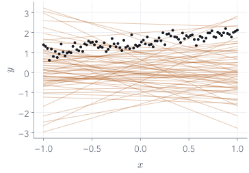
100 points from $y = 1.5 + 0.5\,x + \text{noise}$ (noise sd 0.2). Prior on the two weights: $\theta \sim \N(0, I)$.
The evidence averages the likelihood over every line the prior allows (60 of them drawn, in orange):
Gaussian prior, Gaussian noise: the answer is again Gaussian,
Conjugate again. Now pretend we did not know the formula: could we estimate the integral by sampling the prior?
Estimate the integral by sampling the prior? ▶ N1
Almost every prior draw explains the data terribly
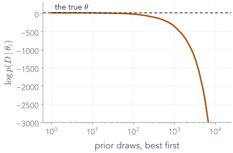
| $\log p(D)$ | |
|---|---|
| closed form | 12.35 |
| 15,000 prior draws, our run | 12.22 |
| 15,000 prior draws, the PML run | 11.20 |
The best 10 of the 15,000 draws carry 95% of the average. The typical draw has $\log p(D\mid\theta_i)$ of about −3,497, against 20.7 at the true $\theta$.
Two weights, and sampling the prior already wastes almost every draw. With millions of weights it is hopeless.
When there is no formula at all
Change the prior a little, and the integral has no closed form
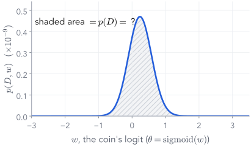
The same coin, but put a Normal prior on its logit: $\theta = \mathrm{sigmoid}(w)$, $w \sim \N(0, 1)$.
Bernoulli likelihood, Normal prior: not conjugate, no formula. In 1-D a grid still works ($\log p(D) = −21.616$).
A neural network has millions of weights: a grid with 100 points per weight needs $100^{\text{millions}}$ points. The evidence is intractable.
So we cannot normalise the posterior. We can still evaluate prior $\times$ likelihood at any $\theta$ we like.
PML Lecture 2, p. 77 ("Bernoulli + Normal: intractable") · PML Laplace notebook, "Normal prior for coin toss" · PML Lecture 23 at 3:06
Three ways around it, on one hard shape ▶ N1
Laplace, MCMC and VI on a two-bump posterior
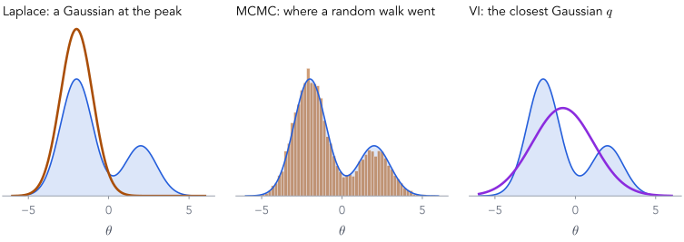
"Closest" needs a measure of distance between two distributions. That is the KL divergence, Part 2.
The variational idea, and today's map
Pick a simple family $q_\psi$, and find its member closest to the posterior
Then the ELBO (Part 6) removes the one thing we cannot compute, and the coin (Part 7) puts it all together.
PML Lecture 23 at 3:06–4:38 · goals G1–G6 from cell 0 of the PML notebook variational-inference.ipynb
Part 2 of 9 · goal G1
KL divergence: how far is one distribution from another?
We will build it from a small problem, one step at a time, until the formula is the only sensible answer. Then we use it on Gaussians and on a mixture.
- ✓Recap: Bayes, and why the evidence is hard
- 2KL divergence: how far is q from p?
- 3Fitting q by gradient descent
- 4No formula for KL? Monte Carlo
- 5Gradients through samples
- 6The ELBO
- 7VI for the coin
- 8Linear regression: correlated weights
- 9Neural networks and the VAE
Start from a problem
A class's favourite fruit, two years running
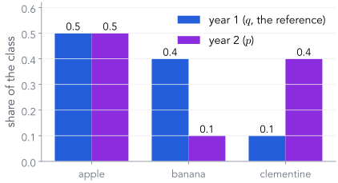
Year 1 is our reference, $q$: 50% apple, 40% banana, 10% clementine. Year 2, $p$: 50%, 10%, 40%.
We want one number for how much year 2 differs, relative to year 1.
"Relative to" matters. Clementine rose from 10% to 40%: a big surprise if you expected year 1. Banana fell from 40% to 10%. The two changes need not count the same.
So the number need not be symmetric. Where would you start?
Step 1: compare by ratios. Step 2: take the log
Ratios say "how many times more"; logs make up and down cancel
| apple | banana | clementine | |
|---|---|---|---|
| $p/q$ | 1 | $\tfrac14$ | 4 |
| $\log(p/q)$ | 0 | $-1.386$ | $1.386$ |
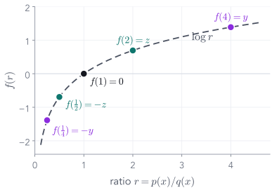
The plain average of the ratios is 1.75: pulled up by the 4, while the $\tfrac14$ barely registers.
We want $f(1) = 0$ (no change), and $f(4) = -f(\tfrac14)$ (four times up undoes four times down). The function that does this is the log.
After the log, a fourfold rise and a fourfold fall are $\pm1.386$: equal and opposite.
Step 3: weight by what is common ▶ N2
Average the log-ratio, weighting each fruit by how common it is in $p$
| apple | banana | clementine | sum | |
|---|---|---|---|---|
| $p$ | 0.5 | 0.1 | 0.4 | |
| $\log(p/q)$ | 0 | $-1.386$ | $1.386$ | |
| $p\,\log(p/q)$ | 0 | $−0.139$ | $0.555$ | 0.416 |
That is the Kullback–Leibler divergence. It is an average of log-ratios, taken under its first argument.
The same number, in bits ▶ N2
KL is the extra message length you pay for using the wrong code
Surprise of an outcome: $\log_2 \frac{1}{p(x)}$ bits. Snow in Kashmir: little surprise. Snow in Gandhinagar: a lot.
Entropy $H(p) = \sum_x p(x)\log_2\frac1{p(x)}$: the average surprise, and the shortest possible average code length.
Cross-entropy $H(p, q)$: the average length when the code was built for $q$. And $H(p, q) - H(p) = \KL(p\,\|\,q)$.
| weather $p$ | sunny | cloudy | rainy | average bits |
|---|---|---|---|---|
| chance | 50% | 25% | 25% | |
| right code | 0 | 10 | 11 | 1.50 |
| code built for 25%, 50%, 25% | 10 | 0 | 11 | 1.75 |
| extra bits $= \KL(p\,\|\,q)$ | 0.25 |
Zero only if the code fits the weather. Never negative: no code beats the right one.
Jia-Bin Huang, "Fantastic KL divergence and how to (actually) compute them", 0:46–4:39 · PML Information Theory lecture
For densities, and the two facts we need
The sum becomes an integral; KL is never negative, and not symmetric
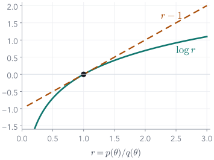
1. $\KL \ge 0$, and $= 0$ only when $q = p$. The log lies below its tangent, $\log r \le r - 1$. With $r = p/q$:
2. $\KL(q\,\|\,p) \ne \KL(p\,\|\,q)$ in general. It is a divergence, not a distance.
From here on we write it as an expectation under the first argument. That form is what we will compute.
PML Lecture 23, "KL Divergence" frame, 5:27–6:16
A coin, both ways ▶ N2
How fast do tosses tell a 0.8 coin from a fair one?
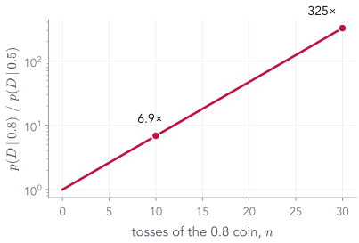
If the coin really is 0.8, each toss adds on average 0.193 nats of evidence for it. After $n$ tosses it is about $e^{n\,\KL}$ times likelier than the fair coin: 6.9× after 10, 325× after 30.
Not symmetric, and not abstract: KL is the rate at which data separate two hypotheses.
Goal G1, the PML notebook's first example ▶ N2
Which $q$ is closer to $p = \N(1, 4^2)$?
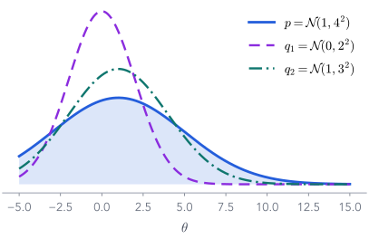
$q_1 = \N(0, 2^2)$: wrong centre, too narrow. $q_2 = \N(1, 3^2)$: right centre, a bit narrow. Vote.
p = dist.Normal(1., 4.) # loc, scale (sd) q1, q2 = dist.Normal(0., 2.), dist.Normal(1., 3.) dist.kl_divergence(q1, p) # 0.35 dist.kl_divergence(q2, p) # 0.07
$\KL(q_1\,\|\,p) = 0.35$, $\KL(q_2\,\|\,p) = 0.07$: $q_2$ is five times closer.
One number per candidate. Next: drag $q$ yourself and watch the number.
PML notebook variational-inference.ipynb, cells 5–13 · PML Lecture 23 at 7:30–9:52
Try it
KL between two Gaussians is an area, and the two directions differ
$p = \N(1, 4^2)$ fixed (blue). Move $q = \N(\mu, \sigma^2)$ (purple):
shaded area, numerically: 0.349
formula: $\KL(q\|p) = $ 0.349
the other way: $\KL(p\|q) = $ 0.932
Start: $q_1 = \N(0, 2^2)$, 0.35 one way. A narrow $q$ is cheap for $\KL(q\|p)$ and expensive for $\KL(p\|q)$.
Exercise, in your notebook ✎ 5 minutes
Derive the KL between two Gaussians
Check your answer on G1: it must give 0.3494 for $q_1$ and 0.0689 for $q_2$.
PML Lecture 23, "Exercise" frames 1–3, 15:19–22:59
The answer, and the same lines inside torch ▶ N2
Three terms: a width ratio, a shift, and a constant
# torch/distributions/kl.py: here p is the FIRST argument (our q) @register_kl(Normal, Normal) def _kl_normal_normal(p, q): var_ratio = (p.scale / q.scale).pow(2) t1 = ((p.loc - q.loc) / q.scale).pow(2) return 0.5 * (var_ratio + t1 - 1 - var_ratio.log())
Same formula, rearranged: var_ratio is $\sigma_q^2/\sigma_p^2$ and t1 is the squared shift in units of $\sigma_p$.
With $p = \N(0, 1)$ it becomes $\tfrac12\big(\sigma^2 + \mu^2 - 1 - \log\sigma^2\big)$: the KL term of every VAE.
When both distributions are Gaussian, the KL is a formula, and torch has it. What if they are not?
PML Lecture 23, "Exercise" frame 4, 22:59–28:48
Which direction? Back to the two-bump posterior ▶ N2
$\KL(p\|q)$ covers both bumps; $\KL(q\|p)$ picks one
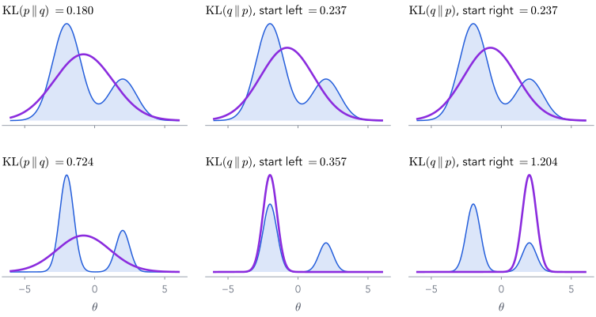
Top, bumps of width 1 (Part 1's mixture): they overlap, and every fit is broad.
Bottom, bumps of width 0.5. $\KL(p\|q)$ averages under $p$: $q$ must cover both (0.724).
$\KL(q\|p)$ averages under $q$: mass in the gap costs a lot, so $q$ sits on one bump. Start left: 0.357. Start right: 1.204, a local optimum.
VI minimises $\KL(q\|p)$, because we can draw from $q$, not from the posterior. Expect $q$ to be too narrow.
Jia-Bin Huang, 4:39–5:25 · mixture from the PML Laplace notebook
Try it
Press play: the same $q$, fitted with the KL each way
Same start, same optimiser; only the direction of the KL differs. Then restart the right panel from the right.
Part 3 of 9 · goal G2
Given $p$, find the closest $q$ by gradient descent
KL gives every candidate $q$ a score. Now treat the score as a loss, and let an optimiser move $q$'s parameters. The target stays simple for now, $p = \N(1, 4^2)$, so we can check every answer.
- ✓Recap: Bayes, and why the evidence is hard
- ✓KL divergence: how far is q from p?
- 3Fitting q by gradient descent
- 4No formula for KL? Monte Carlo
- 5Gradients through samples
- 6The ELBO
- 7VI for the coin
- 8Linear regression: correlated weights
- 9Neural networks and the VAE
First attempt: try a few candidates ▶ N3
Score a grid of $(\text{loc}, \text{scale})$ pairs against $p = \N(1, 4^2)$
| $\KL(q\,\|\,p)$ | scale 1 | scale 2 | scale 4 |
|---|---|---|---|
| loc 0 | 0.949 | 0.349 | 0.031 |
| loc 1 | 0.918 | 0.318 | 0.000 |
for loc in [0., 1.]: for scale in [1., 2., 4.]: print(loc, scale, dist.kl_divergence(dist.Normal(loc, scale), p))
The grid found $p$ itself, only because we put it on the grid. With more parameters a grid is hopeless.
PML notebook, cells 14–15 · PML Lecture 23 at 10:40–12:13
Then gradient descent ▶ N3
Make loc and scale parameters, and minimise the KL with Adam
class TrainableNormal(nn.Module): def __init__(self, loc, scale): super().__init__() self.loc = nn.Parameter(torch.tensor(loc)) self.raw_scale = nn.Parameter(inverse_softplus(scale)) def forward(self): return dist.Normal(self.loc, F.softplus(self.raw_scale)) q = TrainableNormal(loc=4.0, scale=0.5) opt = torch.optim.Adam(q.parameters(), lr=0.05) for step in range(400): loss = dist.kl_divergence(q(), p) opt.zero_grad(); loss.backward(); opt.step()
A trainable $q$. The scale must stay positive, so we learn a raw number and pass it through $\mathrm{softplus}(r) = \log(1 + e^{r}) > 0$.
Start far away: $q = \N(4, 0.5^2)$, the PML notebook's starting point.
The loop. Every step: compute the KL, backpropagate to loc and raw_scale, take a step. Nothing here is specific to Gaussians except the formula inside kl_divergence.
The loss is a KL; the parameters are a distribution's. Otherwise this is any training loop you have written.
PML notebook, cells 16–17 · PML Lecture 23 at 12:13–14:33
Watch it ▶ N3
Press play: $q$ becomes $p$
step 0 of 400
$q = \N($4.00, 0.50$^2)$
$\KL(q\,\|\,p) = $ 1.869
From $\N(4, 0.5^2)$ to $\N(1.00, 4.00^2)$: the KL falls from 1.87 to zero.
What the optimiser did
The centre moves first, then the width catches up
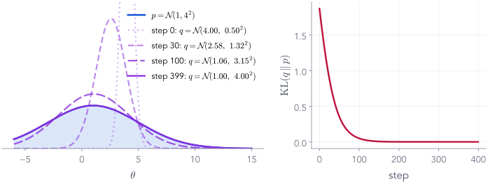
| step | loc | scale | KL |
|---|---|---|---|
| 0 | 4.00 | 0.50 | 1.869 |
| 10 | 3.50 | 0.73 | 1.418 |
| 30 | 2.58 | 1.32 | 0.740 |
| 100 | 1.06 | 3.15 | 0.049 |
| 399 | 1.00 | 4.00 | 0.000 |
Gradient descent found $p$ without being told where it was, only how far away each guess was.
PML notebook, cells 18–21 (kl_qp.gif) · PML Lecture 24 at 4:46–5:32
The same in two dimensions · goal G6, first look ▶ N3
A correlated target: a diagonal $q$ cannot tilt, so it shrinks
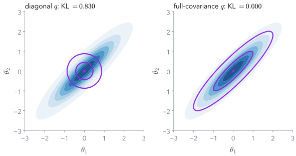
Target $p$: two dimensions, unit widths, correlation $\rho = 0.9$ (blue).
Diagonal $q$ (one width per axis, no correlation): best width 0.436 $= \sqrt{1-\rho^2}$, KL 0.830.
Full covariance $q$, $\Sigma = LL^\top$ with $L$ lower-triangular: matches $p$ exactly, KL 0.000.
$\KL(q\|p)$ prefers a $q$ that is too narrow over one that spills outside $p$. Part 2's lesson, in 2-D.
PML notebook, goal G6 (kl_qp_2.gif) · PML Lecture 23 at 1:00:19 · Bishop, PRML, Fig. 10.2
Part 4 of 9 · goals G3 and G5
When there is no formula for the KL, estimate it by sampling
Real posteriors are not Gaussian, so the KL between our $q$ and the target has no formula. But a KL is an average under $q$, and we can draw from $q$ as often as we like.
- ✓Recap: Bayes, and why the evidence is hard
- ✓KL divergence: how far is q from p?
- ✓Fitting q by gradient descent
- 4No formula for KL? Monte Carlo
- 5Gradients through samples
- 6The ELBO
- 7VI for the coin
- 8Linear regression: correlated weights
- 9Neural networks and the VAE
A target from another family ▶ N4
Two bumps, and two Gaussian candidates. Which is closer?
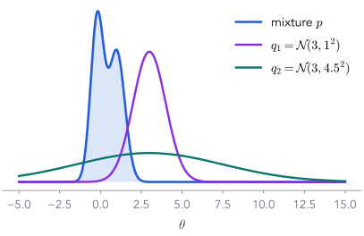
$q_1 = \N(3, 1^2)$: the right sort of width, in the wrong place.
$q_2 = \N(3, 4.5^2)$: so wide that it covers $p$, and much else.
Vote, using Part 2: which one does $\KL(q\,\|\,p)$ prefer?
Remember: $\KL(q\|p)$ averages under $q$, so it punishes $q$ for mass where $p$ has almost none.
PML notebook, cells 23–28 (dkl-different.png) · PML Lecture 23 at 28:48–29:36
Ask torch ▶ N4
torch has no formula between a Gaussian and a mixture
p_s = MixtureSameFamily(Categorical(torch.tensor([0.5, 0.5])), Normal(torch.tensor([-0.2, 1.0]), torch.tensor([0.4, 0.5]))) q_1 = dist.Normal(3., 1.) dist.kl_divergence(q_1, p_s) # NotImplementedError: No KL(p || q) is implemented for p type Normal # and q type MixtureSameFamily
We cannot integrate it. Can we average it?
PML notebook, cell 29 · PML Lecture 23 at 29:36–30:24
Monte Carlo, the general form
Any average under $p$ can be estimated from draws of $p$
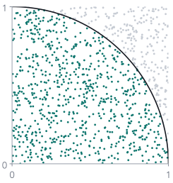
Example: darts thrown uniformly at the unit square. A dart lands inside the quarter circle with probability $\pi/4$, so
An integral became an average of random draws. We need only to sample from $p$ and to evaluate $f$.
PML Sampling-1, "General Form" and "Estimating Pi" · notebook mc_sampling_intro.ipynb
Goal G3: the KL by sampling ▶ N4
Draw from $q$, average $\log q - \log p$
def kl_via_sampling(q, p, n_samples=100_000): sample_set = q.sample([n_samples]) # from the FIRST argument return torch.mean(q.log_prob(sample_set) - p.log_prob(sample_set))
| exact | sampling | |
|---|---|---|
| $\KL(q_1\,\|\,q_2)$, two Gaussians | 1.0288 | 1.0276 |
| $\KL(q_1\,\|\,p)$, mixture | none | 9.45 |
| $\KL(q_2\,\|\,p)$, mixture | none | 45.02 |
Check it where we know the answer, then use it where we do not: $q_1$ wins, by a factor of five.
PML notebook, cells 30–35 · PML Lecture 23 at 30:24–34:39 · Lecture 24 at 6:18–8:40
Goal G5: how many samples? ▶ N4
Unbiased, but the noise shrinks only like $1/\sqrt{N}$
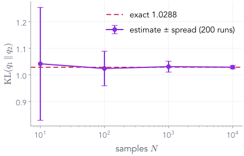
Run kl_via_sampling 200 times for each $N$, on $\KL(q_1\,\|\,q_2)$ where the answer is 1.0288.
| $N$ | 10 | 100 | 1,000 | 10,000 |
|---|---|---|---|---|
| spread | 0.212 | 0.065 | 0.021 | 0.007 |
The average is right at every $N$ (unbiased). Each 100× more samples buys 10× less noise.
For training we only need an unbiased estimate: a noisy loss gives a noisy, but correct on average, gradient.
PML Sampling-1, "Unbiased Estimator?" · Jia-Bin Huang, 7:02–11:00
Part 5 of 9 · goal G4
Gradients through random samples: the reparameterisation trick
We can estimate the KL to a mixture by sampling from $q$. To minimise it we need its gradient with respect to $q$'s parameters, and a random draw seems to have none.
- ✓Recap: Bayes, and why the evidence is hard
- ✓KL divergence: how far is q from p?
- ✓Fitting q by gradient descent
- ✓No formula for KL? Monte Carlo
- 5Gradients through samples
- 6The ELBO
- 7VI for the coin
- 8Linear regression: correlated weights
- 9Neural networks and the VAE
The original formulation, as a computational graph
The loss depends on loc and scale only through a random draw
Backpropagation needs a derivative at every node. "Draw a sample" has none: the path is blocked.
PML notebook, cell 48 (reparam.001) · PML Lecture 23 at 35:26–37:46
The same, in code ▶ N5
torch agrees: sample() cuts the graph
loc = torch.tensor(2.0, requires_grad=True) scale = torch.tensor(0.5, requires_grad=True) q = dist.Normal(loc, scale) s = q.sample() s.backward() # RuntimeError: element 0 of tensors does not require grad # and does not have a grad_fn
s is a plain number with no history. Any loss built from it, like kl_via_sampling, gives no gradient to loc or scale.So we cannot yet train $q$ on the Monte Carlo KL. We need the randomness to sit somewhere else.
PML notebook, cell 39 · PML Lecture 24 at 9:27–10:15
The reparameterised formulation
Draw the noise from a fixed $\N(0, 1)$; then shift and stretch it
✎Before the next click: what are $\partial z/\partial\,\text{loc}$ and $\partial z/\partial\,\text{scale}$?
PML notebook, cells 43–45 and 49 (reparam.002) · PML Lecture 23 at 38:53–41:33
Check the exercise in code ▶ N5
Now the draw has a gradient: $\partial z/\partial\,\text{loc} = 1$, $\partial z/\partial\,\text{scale} = \varepsilon$
torch.manual_seed(42) loc = torch.tensor(2.0, requires_grad=True) scale = torch.tensor(0.5, requires_grad=True) eps = dist.Normal(0., 1.).sample() # randomness that does not depend on loc or scale z = loc + scale * eps # the reparameterised draw z.backward() loc.grad, scale.grad, eps # 1.0000, 0.3367, 0.3367
The gradient with respect to scale is the noise that was drawn. Different draw, different gradient: noisy but unbiased.
PML notebook, cell 44 · PML Lecture 24 at 11:02–13:26
You do not have to write it yourself ▶ N5
rsample is a reparameterised sample
# torch/distributions/normal.py def rsample(self, sample_shape=torch.Size()): shape = self._extended_shape(sample_shape) eps = _standard_normal(shape, dtype=self.loc.dtype, device=self.loc.device) return self.loc + eps * self.scale z = dist.Normal(loc, scale).rsample() z.backward() # loc.grad = 1.0000, scale.grad = 0.3367
The same three lines as ours, inside torch.
Same seed, same numbers as our hand-made version.
| family | has_rsample |
|---|---|
| Normal | True |
| Beta | True |
| Poisson | False |
Continuous families with a smooth sampler have one (the Beta's goes through Gamma draws). Counts cannot be shifted and stretched.
PML notebook, cells 46–47 · PML Lecture 24 at 14:15–18:18
Goal G4: fit a Gaussian to the mixture ▶ N5
Change sample to rsample, and the Monte Carlo KL trains
def kl_loss(q, n_samples=5000): sample_set = q.rsample([n_samples]) # reparameterised return torch.mean(q.log_prob(sample_set) - p_s.log_prob(sample_set)) history = fit(TrainableNormal(loc=6.0, scale=0.1), kl_loss, steps=1500, lr=0.05)
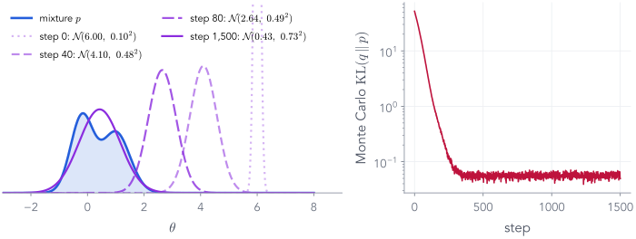
From $\N(6, 0.1^2)$ to $\N(0.43, 0.73^2)$: one Gaussian across both bumps, Monte Carlo KL about 0.049.
PML notebook, cells 50–58 (kl_qp_mg.gif) · PML Lecture 24 at 20:03–21:51
Watch it
Press play: 200 reparameterised draws per step
step 0 of 1,500
$q = \N($6.00, 0.10$^2)$
Monte Carlo $\KL(q\,\|\,p) \approx$ —
Each step: draw $\varepsilon$, form $z = \text{loc} + \text{scale}\cdot\varepsilon$, average $\log q(z) - \log p(z)$, and follow its gradient.
Part 6 of 9
The ELBO: a loss we can compute without the posterior
Parts 2–5 fitted $q$ to targets we could evaluate. The posterior is not one of them: we cannot evaluate $p(\theta\mid D)$, only $p(D\mid\theta)\,p(\theta)$. Three short algebra steps fix this.
- ✓Recap: Bayes, and why the evidence is hard
- ✓KL divergence: how far is q from p?
- ✓Fitting q by gradient descent
- ✓No formula for KL? Monte Carlo
- ✓Gradients through samples
- 6The ELBO
- 7VI for the coin
- 8Linear regression: correlated weights
- 9Neural networks and the VAE
The catch
The KL we want to minimise contains the posterior itself
"If we could evaluate the posterior, we would not need $q$." So rewrite the KL using what we can evaluate.
PML Lecture 23 at 47:15–48:55 · Lecture 24 at 23:44
Step 1 of 3 ✎ try it first
Substitute Bayes' rule for the posterior
$p(D, \theta) = p(D\mid\theta)\,p(\theta)$ is the joint: prior times likelihood, which we can evaluate.
PML Variational-Inference slides, "Evidence Lower Bound" 1–2 · PML Lecture 23 at 48:55–50:44
Step 2 of 3
The evidence does not depend on $\theta$, so it comes out of the average
Rearranged: the evidence splits into a part we can compute and the KL we want to shrink.
PML Variational-Inference slides, "Evidence Lower Bound" 2 · PML Lecture 23 at 50:44–52:18
Step 3 of 3
KL $\ge 0$, so the ELBO is a lower bound on the log evidence
Maximise the ELBO, which needs only draws from $q$ and the joint. No evidence, no posterior.
PML Variational-Inference slides, "Evidence Lower Bound" 3 · PML Lecture 23 at 52:18–53:55
The picture, with the coin's numbers ▶ N6
For every $q$: ELBO + KL $= \log p(D) = −21.397$
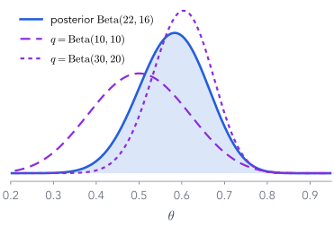
| $q$ | ELBO | KL | ELBO + KL |
|---|---|---|---|
| $\mathrm{Beta}(10, 10)$ | −22.020 | 0.623 | −21.397 |
| $\mathrm{Beta}(30, 20)$ | −21.449 | 0.051 | −21.397 |
| $\mathrm{Beta}(22, 16)$, the posterior | −21.397 | 0.000 | −21.397 |
The bracket's total never moves. A better $q$ moves the line between ELBO and KL to the right.
PML Variational-Inference slides, "Evidence Lower Bound" 3 (kl-elbo.png) · PML Lecture 23 at 53:55–56:27
Try it
Move $q = \mathrm{Beta}(\alpha, \beta)$: the ELBO and KL trade, the total stays put
$\ELBO(q) = $ — · $\KL = $ —
Find the $q$ that closes the gap. The ELBO can tell you when you are there, without ever knowing the posterior.
Two ways to write the same ELBO
What the code computes, and what the VAE lecture will use
The first form is what we will code for the coin. The second is the VAE's loss, with the prior $\N(0, I)$ and Part 2's Gaussian KL.
Part 7 of 9 · worked example
Variational inference for the coin, start to finish
Part 1's coin: prior $\mathrm{Beta}(5, 3)$, 17 heads in 30. We know the answer, $\mathrm{Beta}(22, 16)$ and $\log p(D) = −21.40$, so we can check every step. VI will use only the joint.
- ✓Recap: Bayes, and why the evidence is hard
- ✓KL divergence: how far is q from p?
- ✓Fitting q by gradient descent
- ✓No formula for KL? Monte Carlo
- ✓Gradients through samples
- ✓The ELBO
- 7VI for the coin
- 8Linear regression: correlated weights
- 9Neural networks and the VAE
The model, as functions ▶ N7
All VI needs from the model is $\log p(D, \theta)$ at any $\theta$
prior = dist.Beta(5., 3.) def log_likelihood(theta): # 17 heads, 13 tails return 17 * torch.log(theta) + 13 * torch.log1p(-theta) def log_joint(theta): return log_likelihood(theta) + prior.log_prob(theta) true_posterior = dist.Beta(5 + 17, 3 + 13) # only to check
Prior $\log p(\theta)$: torch's Beta has log_prob.
Likelihood $\log p(D\mid\theta)$: the sum over tosses of $\log\theta$ or $\log(1-\theta)$. It works on a whole batch of $\theta$'s at once.
Joint $\log p(D, \theta)$: the unnormalised log posterior, what the ELBO uses.
The true posterior is never used by VI. We keep it to check the answer.
No evidence anywhere: the model is a prior and a likelihood, as in any Bayesian model.
PML notebook, cells 62–65 · PML Lecture 24 at 30:14–37:42 · companion: vu.Coin
Which family for $q$?
$\theta$ lives in $[0, 1]$, so let $q$ be a $\mathrm{Beta}(\alpha, \beta)$
$q = \mathrm{Beta}(\alpha, \beta)$
Right support, two parameters, and an rsample (Part 5). Here it even contains the true posterior, so VI can be exact.
$q = \N(\mu, \sigma^2)$?
It puts mass below 0 and above 1, where $\log p(D\mid\theta)$ is undefined. The fix is to fit a Normal to $\mathrm{logit}(\theta)$ instead: automatic differentiation VI (ADVI) does this for every constrained parameter.
Parameters $\psi = (\alpha, \beta)$, both kept positive with softplus, as the scale was in Part 3.
In general the family will not contain the posterior; VI then finds the closest member. Here we get to see it hit the target.
PML Lecture 24 at 31:50–32:37 and 47:15–48:04
The loss: minus the ELBO, by Monte Carlo ▶ N7
neg_elbo: four lines, one per term of the formula
def neg_elbo(log_joint_fn, q, n_mc_samples=100): theta = q.rsample([n_mc_samples]) # draws from q, with gradients log_q_theta = q.log_prob(theta) log_joint = log_joint_fn(theta) return -(log_joint - log_q_theta).mean()
rsample, not sample, so the loss can be differentiated with respect to $\alpha$ and $\beta$.
Evaluate $\log q$ and $\log p(D, \theta)$ at the same 100 draws.
Average, and flip the sign: optimisers minimise.
Compare Part 4's kl_via_sampling: the same code, with the joint in place of the target density.
PML notebook, cells 66–67 · PML Lecture 24 at 38:29–40:57
Score two guesses ▶ N7
A bad $q$ scores in the hundreds; the posterior scores exactly $-\log p(D)$
| $q$ | neg_elbo | |
|---|---|---|
| $\mathrm{Beta}(0.1, 2)$: almost all mass near 0 | 239.38 | PML runs: 218.88, 188.33 |
| $\mathrm{Beta}(22, 16)$: the true posterior | 21.397 | $= -\log p(D)$, every run |
The first is a Monte Carlo estimate and changes from run to run. The second is the bound itself.
PML notebook, cells 68–69 (both versions of the notebook) · PML Lecture 24 at 40:57–41:46
Train it ▶ N7
From $\mathrm{Beta}(45, 45)$ to $\mathrm{Beta}(22.6, 16.4)$ in 3,000 steps
q_beta = TrainableBeta(alpha=45.0, beta=45.0) # the PML notebook's starting point history = fit(q_beta, lambda q: neg_elbo(log_joint, q), steps=3000, lr=0.05) q_beta # TrainableBeta(alpha=22.56, beta=16.43); true posterior: Beta(22, 16)
VI recovered the posterior from the joint alone, and $-\ELBO$ settled at $21.40 = -\log p(D)$.
PML notebook, cells 70–71 · PML Lecture 24 at 41:46–42:32
Watch it
Press play: gradient ascent on the coin's ELBO
step 0 · $\ELBO = $ — · $\KL = $ —
The bracket closes as $q$ lands on the posterior: the ELBO meets $\log p(D)$ and the KL goes to zero.
The same in Pyro (optional) ▶ N7
A model, a guide, and SVI with Trace_ELBO
def model(data): theta = pyro.sample("theta", dist.Beta(5., 3.)) with pyro.plate("data", len(data)): pyro.sample("obs", dist.Bernoulli(theta), obs=data) def guide(data): a = pyro.param("alpha_q", torch.tensor(45.), constraint=positive) b = pyro.param("beta_q", torch.tensor(45.), constraint=positive) pyro.sample("theta", dist.Beta(a, b)) svi = SVI(model, guide, Adam({"lr": 0.05}), loss=Trace_ELBO()) for step in range(8000): svi.step(data)
Model: prior and likelihood, as sampling statements.
Guide: our $q$, with learnable $\alpha$, $\beta$. The names must match the model's.
SVI builds neg_elbo for us. The PML run ended near $\alpha \approx 22.9$, $\beta \approx 16.7$.
Probabilistic programming languages automate exactly what we wrote by hand.
PML notebook, cells 72–77 · PML Lecture 24 at 42:32–45:41
Part 8 of 9 · worked example · goal G6
Two weights at once: VI for linear regression
The same neg_elbo, now with a 2-D $\theta$ and a 2-D Gaussian $q$. Bayesian linear regression has an exact posterior, so once more we can check the answer. If time is short, this part is homework: notebook N8.
- ✓Recap: Bayes, and why the evidence is hard
- ✓KL divergence: how far is q from p?
- ✓Fitting q by gradient descent
- ✓No formula for KL? Monte Carlo
- ✓Gradients through samples
- ✓The ELBO
- ✓VI for the coin
- 8Linear regression: correlated weights
- 9Neural networks and the VAE
The model, and the only new line ▶ N8
$y = 3x + 4 + \text{noise}$, and a Gaussian $q$ over (intercept, slope)
x = torch.linspace(-5, 5, n_points) y = 3 * x + 4 + 5 * torch.randn(n_points) prior = dist.MultivariateNormal(torch.zeros(2), torch.eye(2)) def log_joint(theta): # theta: [n, 2] mean = theta[:, :1] + theta[:, 1:] * x log_lik = dist.Normal(mean, 5.).log_prob(y).sum(-1) return log_lik + prior.log_prob(theta) def neg_elbo(q, n=100): theta = q.rsample([n]) return -(log_joint(theta) - q.log_prob(theta)).mean()
The PML notebook's data: noise of scale 5, prior $\theta\sim\N(0, I)$.
Each row of theta is one line; the likelihood scores it on every point.
The coin's neg_elbo, unchanged. Two choices of $q$: a diagonal Gaussian (two means, two widths) or a full one, $\Sigma = LL^\top$ (one more number, the tilt).
Nothing about VI changed. Only the model's log_joint and the shape of $q$.
PML notebook, cells 78–82 · PML Lecture 24 at 56:55–57:47
20 points ▶ N8
Both $q$'s land on the exact posterior, and give a band of lines
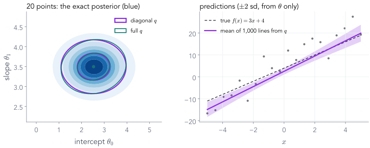
| intercept | slope | |
|---|---|---|
| exact mean, sd | 2.55, 0.745 | 3.49, 0.346 |
| full $q$ by VI | 2.53, 0.718 | 3.50, 0.340 |
The intercept is pulled from 4 towards the prior's 0: with 20 noisy points, the prior still matters.
PML notebook, cells 83–86 · PML Lecture 24 at 57:47–1:01:57
200 points ▶ N8
Ten times the data: the posterior, and the band, shrink
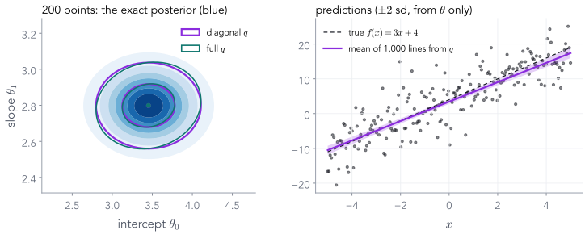
| intercept | slope | |
|---|---|---|
| exact mean, sd | 3.46, 0.333 | 2.80, 0.121 |
| full $q$ by VI | 3.45, 0.327 | 2.80, 0.120 |
The widths fall two to three times, and the intercept moves close to 4: now the data dominate the prior.
PML notebook, cells 87–89 · PML Lecture 24 at 1:01:57–1:05:09
Part 9 of 9
Neural networks, and the VAE in one slide
What changes when $\theta$ has millions of entries, and how the same ELBO becomes the loss of a variational autoencoder.
- ✓Recap: Bayes, and why the evidence is hard
- ✓KL divergence: how far is q from p?
- ✓Fitting q by gradient descent
- ✓No formula for KL? Monte Carlo
- ✓Gradients through samples
- ✓The ELBO
- ✓VI for the coin
- ✓Linear regression: correlated weights
- 9Neural networks and the VAE
Millions of parameters
For a neural network, $q$ is one Gaussian per weight: mean-field
Full covariance
One mean per weight, plus a correlation for every pair. A million weights: about $5\times 10^{11}$ numbers. Impossible to store, let alone fit.
Mean-field
$q(\theta) = \prod_i \N(\theta_i\mid\mu_i, \sigma_i^2)$: two numbers per weight. Cheap, and rsample is one line, as in Part 5.
The price is Part 3's 2-D picture: no correlations, and $\KL(q\|p)$ makes each width too narrow. Bayesian neural networks trained this way tend to be over-confident.
MCMC remains the gold standard for small networks; mean-field VI is what scales.
PML Variational-Inference slides, "Neural Networks" · PML Lecture 24 at 49:02–50:39 and 52:50–56:04
Where this goes next lecture
The VAE: one posterior per image, predicted by an encoder
| today | in the VAE |
|---|---|
| $\theta$, what we infer | $z$, an image's code |
| $D$, the data | $x$, one image |
| prior $p(\theta)$ | $p(z) = \N(0, I)$ |
| likelihood $p(D\mid\theta)$ | the decoder $p(x\mid z)$ |
| $q(\theta)$, one fit | $q(z\mid x) = \N\big(\mu(x), \sigma(x)^2\big)$, from an encoder |
Every image has its own posterior. Fitting a $q$ per image would be slow, so a network predicts $q$'s parameters from $x$: amortised inference.
The second form from Part 6. The KL is Part 2's Gaussian formula; the expectation uses $z = \mu + \sigma\cdot\varepsilon$ from Part 5.
Nothing new is needed: a VAE is today's ELBO, with a decoder for the likelihood and an encoder for $q$.
PML Lecture 25 (VAEs) at 44:00–51:13 and 1:06:27–1:08:05
Today on one page
From Bayes' rule to a loss we can train
rsample→
the ELBO needs only the joint→
the coin: VI recovers $\mathrm{Beta}(22, 16)$
Two lines to remember. The VAE lecture uses both on its first slide.
Exit questions
Five questions
- Why can we not just compute $p(\theta\mid D)$ for a neural network? The evidence is an integral over millions of weights with no formula. A grid is impossible, and sampling the prior wastes almost every draw: for two weights, the best 10 of 15,000 draws already carried 95% of the estimate.
- Why does VI minimise $\KL(q\|p)$ rather than $\KL(p\|q)$, and what is the price? A KL averages under its first argument, and we can draw from $q$ but not from the posterior. The price: $q$ seeks a mode and comes out too narrow.
- Why does
q.sample()break training, and what doesrsampledo instead? A sample has no gradient path.rsampledraws $\varepsilon\sim\N(0, 1)$ and returns $\text{loc} + \text{scale}\cdot\varepsilon$, whose gradients are 1 and $\varepsilon$. - $\log p(D) = \ELBO(q) + \,?$ $\KL\big(q\,\|\,p(\theta\mid D)\big) \ge 0$. Since $\log p(D)$ does not depend on $q$, raising the ELBO lowers the KL, and the ELBO needs only $p(D, \theta)$.
- For the coin, what does
neg_elboreturn at $q = \mathrm{Beta}(22, 16)$, and why is it the same on every run? 21.397 $= -\log p(D)$. At the posterior, $\log p(D, \theta) - \log q(\theta) = \log p(D)$ for every $\theta$, so every draw gives the same number.